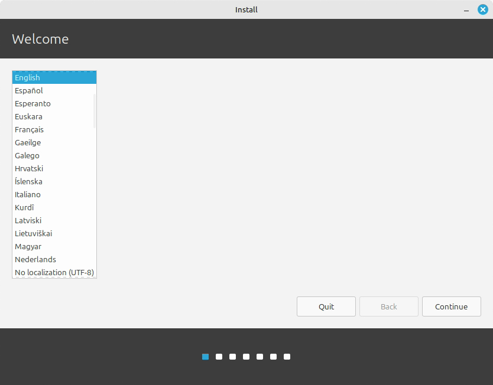
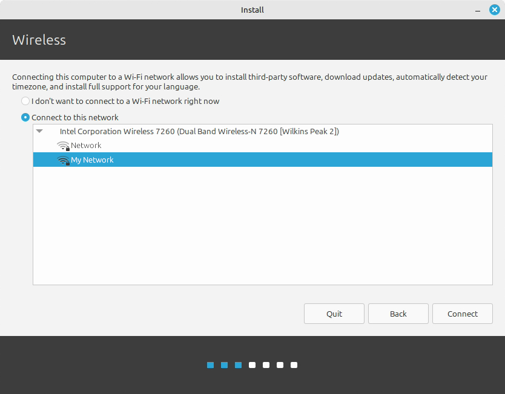
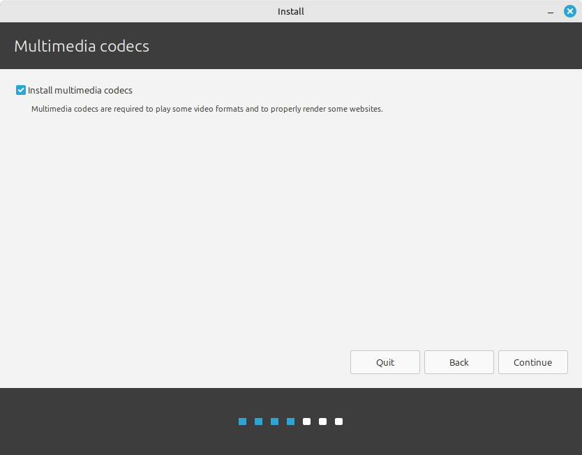
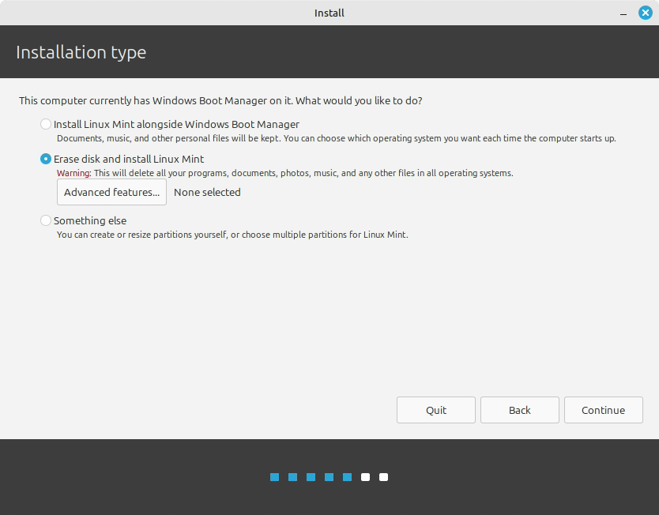
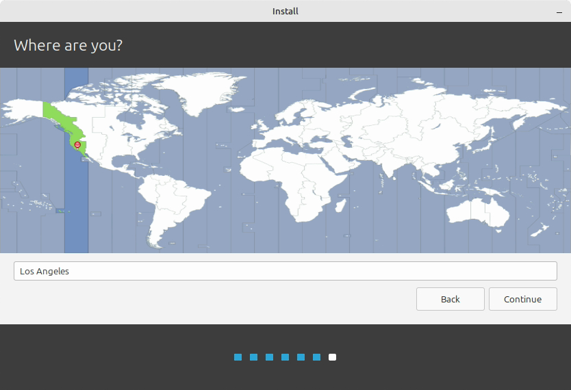
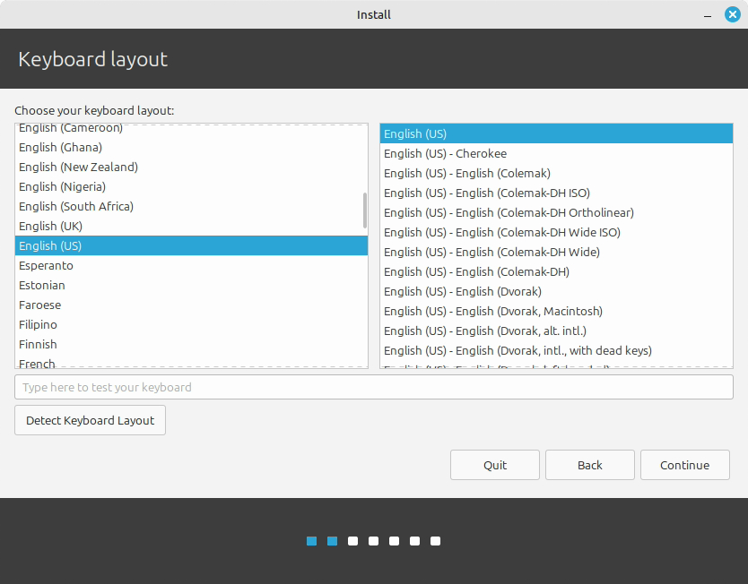
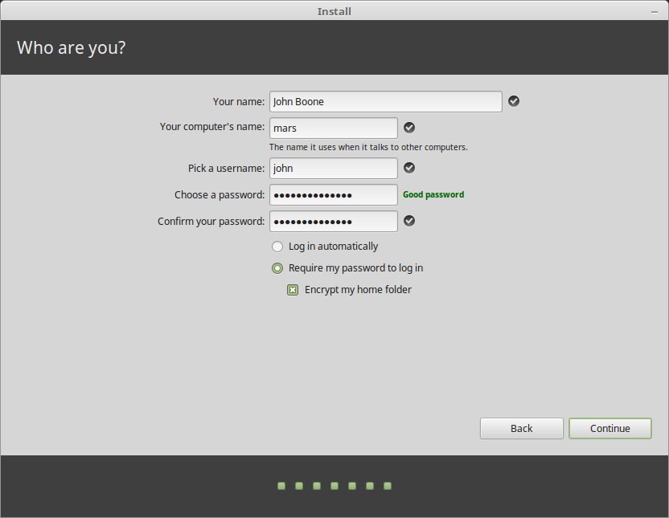
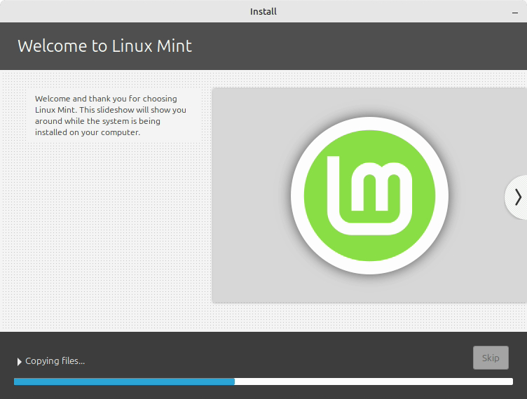
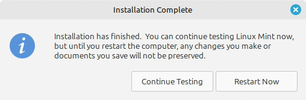

Install Linux Mint 22.3 Xfce
Linux Mint is a Linux operating system that usually just works and is easy for new users. We are installing Linux Mint 22.3 “Zena” Xfce Edition. Xfce has a familiar, classic Windows-like layout and uses fewer system resources, which makes it a good fit for our older computers with less than 8 GB of RAM.
Class materials
Choose Erase disk and install Linux Mint only on the classroom computer assigned by your teacher. This deletes Windows, accounts, programs, and every file on the selected drive. Stop and ask your teacher before continuing if you are not certain that the computer and drive are approved.
If anything here is unclear, incomplete, or could be explained better, improve it in your own copy. Use Suggesting mode if it is available. Otherwise, add a clearly labelled “Suggested improvement” with your revised wording. Include one sentence explaining why your version is clearer or more useful. Do not remove required work. Mr. A will review your change and may update the course website and future assignment documents if he agrees it helps. Improving a real instruction accurately is one way to demonstrate Level 4+ thinking.
This classroom guide is adapted from the official Linux Mint Installation Guide. The installer screenshots come from that guide. Screens can change slightly between releases, and the example names or checkboxes shown in a screenshot may not match our required classroom settings. Follow the written choices on this page.
Before you begin
You need:
- the assigned classroom computer;
- a Linux Mint 22.3 “Zena” Xfce USB installer signed out from your teacher;
- the classroom Wi-Fi credentials; and
- your copy of the Linux Mint Installation Reflection.
Disconnect any personal USB drives or external storage. Have the teacher confirm the target computer before you erase anything.
How the classroom USB was made
The teacher, with help from student volunteers, prepared the bootable USB drives before this lab. They downloaded the Linux Mint Xfce .iso image from the official Linux Mint download page and used balenaEtcher to write the image to a USB drive. On Windows, Rufus is another good tool for creating a bootable USB.
An ISO cannot simply be copied onto a USB like an ordinary file. A tool such as Etcher or Rufus writes the image in a form the computer can start from. This process erases the USB drive, so do not try it with a personal drive unless its contents are safely backed up.
For this lab, sign out a prepared USB from your teacher. Record its number if your class uses numbered drives, and return it when the installation is complete.
Working at home: Windows and Mac options
In class, we are installing Linux Mint directly on approved classroom computers. Do not erase or dual boot a family computer for this course.
If you use Windows 11 or a supported Windows 10 computer at home, the recommended option is Windows Subsystem for Linux 2 (WSL 2) with Ubuntu. It gives you a real Linux command line without replacing Windows. Ask the computer owner for permission because installation requires administrator access and may require a restart.
- Open PowerShell as Administrator.
- Run:
wsl --install- Restart Windows if asked.
- Open Ubuntu from the Start menu.
- Create a private Linux username and password. The password will not appear while you type it.
- Return to PowerShell and verify the installation:
wsl --list --verbose
wsl --statusIf WSL is already installed but Ubuntu is missing, run wsl --list --online, then wsl --install -d Ubuntu. Never use wsl --unregister for this course because it permanently deletes that WSL distribution and its files. Follow the official Microsoft WSL installation guide if your screen differs.
On a Mac, use the built-in Terminal for transferable work such as files, Git, Quarto, Python and SSH. macOS is Unix-like, but it is not Linux. Complete Linux-specific hardware, package, permission and administration activities on the classroom Linux computer or an approved remote Linux host. Apple’s Terminal User Guide is a useful reference.
1. Start the live system
Insert the Linux Mint USB drive, then start or restart the computer. You need to choose the USB as the startup device before the existing operating system loads.
On the classroom Intel iMacs and Mac minis
- Press the power button or restart the Mac.
- Immediately hold Option (⌥) or Alt until Startup Manager appears.
- Select the USB drive (it may appear as EFI Boot) and press Enter/Return. If the USB does not appear, stop and ask your teacher.
Apple documents the Option/Alt startup shortcut in its Intel Mac startup-key guide.
On a Windows PC
The startup key is different for almost every manufacturer and model. Common keys include Delete, F1, F2, F10, F11, F12, and Escape.
- Watch the first manufacturer-logo screen for a message such as Boot Menu, Boot Options, Setup, BIOS, or UEFI.
- Press the listed key repeatedly as the computer starts. Try the one-time Boot Menu first and select the USB drive.
- If there is no boot menu, enter the BIOS/UEFI settings and, with teacher approval, temporarily move the USB drive ahead of the internal drive in the boot order. Do not change unrelated settings.
If the key is not shown, search for manufacturer model boot menu key or manufacturer model boot from USB. Include the exact manufacturer and model printed on the computer. The official Linux Mint boot guide also lists common keys.
Choose the normal Start Linux Mint option when the Linux Mint startup menu appears. Linux Mint first opens a live session: a temporary desktop running from the USB drive.
The live session may feel slower than the finished installation, and changes made there are not permanent. If the live session asks for a password, leave it blank and press Enter.
Double-click Install Linux Mint on the desktop.
2. Choose the language
Select English, then select Continue.

3. Connect to the classroom Wi-Fi
Select the classroom network and connect using the Wi-Fi credentials given in class.
Do not use the guest Wi-Fi. Use only the classroom Wi-Fi credentials provided by your teacher.

4. Install multimedia codecs
Check Install multimedia codecs, then select Continue. Codecs help the computer play common audio and video formats.

5. Choose the installation type
Select Erase disk and install Linux Mint.
- Leave Advanced features at its default setting with None selected. We can explore advanced storage settings in a later lab.
- Do not select an encryption option for this classroom installation.
- Do not select Something else.
- Do not select an “install alongside” option in this lab.

Select Install Now or Continue, depending on the wording shown. Read the drive-change summary, confirm that it refers to the approved classroom drive, and then continue.
In a future lab, we will install another operating system alongside Windows and create a dual-boot computer. That is not today’s task.
If you are installing Linux on your own computer and want to keep Windows, stop here and do not choose “Erase disk and install Linux Mint.” A dual-boot installation requires a current backup, enough free storage, and a careful plan for the computer’s partitions, encryption, firmware, and recovery options.
It is usually easier to install Windows first and Linux second. Windows installation can replace the existing boot sequence, while Linux Mint normally detects Windows and creates a menu for choosing an operating system at startup. See Linux Mint’s official multi-boot guidance.
Before changing partitions, check whether Windows uses BitLocker/device encryption, save its recovery key, and research the exact computer model. An encrypted Windows drive may prevent a Linux installer from safely examining or resizing the Windows partitions. Ubuntu’s BitLocker dual-boot explanation describes this issue clearly.
Some computers have two internal SSDs. Installing each operating system on a separate drive can make the layout easier to understand and can reduce the chance of accidentally changing the other system’s partitions or boot files. However, this is not a rule of EFI/UEFI, and it is not required on every computer. Firmware behaviour varies, even between Lenovo Legion models, so search the manufacturer, exact model, and terms such as dual boot, UEFI, and boot order before proceeding. Use a model-specific guide and ask for experienced help rather than guessing.
6. Set the time zone
Choose Toronto, then select Continue.

7. Set the keyboard layout
Choose English (US) for the keyboard layout. Do not choose English (Canadian). Use the test box to check a few letters, numbers, and punctuation marks, then select Continue.

8. Create the classroom account
Enter the following settings exactly, except for the computer name:
| Installer field | Classroom setting |
|---|---|
| Your name | min |
| Your computer’s name | Create a unique, school-appropriate name |
| Pick a username | min |
| Choose a password | Use the classroom account password supplied directly by your teacher |
| Confirm your password | Enter the same teacher-supplied password again |
| Login choice | Require my password to log in |
| Encrypt my home folder | Leave unchecked |
Use only lowercase letters, numbers, and hyphens in the computer name, with no spaces. A name such as min-tej-14 is clear and easy to record. Your name must be unique in the classroom.
The official screenshot shows example names and shows home-folder encryption selected. For this lab, use min, your unique computer name, the classroom account password supplied directly by your teacher, Require my password to log in, and do not encrypt the home folder. Never reuse a classroom password for a personal account.

Select Continue to begin the installation.
9. Explore safely while the installer works
The installation slideshow will run while files are copied.

Without closing the installer:
- Open the web browser.
- Visit the TEJ Notes website and record whether it loads.
- Open the main menu and find the Software Manager, Linux Mint’s “app store.” Search for
gamesand record one school-appropriate game or application that looks interesting. - Find the File Manager and Terminal icons. You do not need to run commands yet.
Software installed during the live session may disappear after restart, so wait until the finished system starts before installing your chosen application.
10. Restart into the installed system
When the installer reports that it is finished, select Restart Now.

Remove the USB drive when the computer asks, then press Enter. Log in as min using the classroom account password supplied directly by your teacher.
11. Test the new installation
- Open the browser and confirm that the TEJ Notes website still loads.
- Open Software Manager from the main menu.
- Search for
gamesor search for the application you recorded earlier. - With teacher approval, install one school-appropriate game or useful application. Record its exact name.
- Open the application once to confirm that it works.
If you finish early, choose one optional challenge:
- change the desktop wallpaper or panel appearance without hiding essential controls;
- find the system-information screen and record the computer’s RAM;
- take a screenshot of your finished desktop;
- find one accessibility setting that could make the computer easier for someone to use; or
- compare the Linux desktop with Windows and list one similarity and one difference.
Google Classroom submission
Complete your copy of the Linux Mint Installation Reflection.
Submit ONE completed Google Doc in Google Classroom. The reflection document gives you the required headings, screenshot, reflection questions, final checklist and Above and beyond section.
Your guide-improvement evidence must also show that you:
- added at least two useful comments to the installation guide;
- made at least one clear improvement in the assigned copy;
- pasted the improved sentence or step into the reflection document; and
- explained why the revision is clearer or more useful.
Record the following evidence before you leave:
| Prompt | Your evidence |
|---|---|
| Computer name | |
| Did the TEJ Notes website load? | |
| Game or software installed | |
| One thing I like | |
| One thing I do not like yet | |
| One thing I want to learn more about | |
| One difference I noticed between Linux Mint and Windows | |
| Optional discovery or customization |
Show the installed system and completed lab log to your teacher.
Extend your learning
- Review the Linux Start Here class slides for the distribution, installation, WSL, account and Bashcrawl sequence.
- Visit the Linux Mint documentation to explore official desktop and system guides.
- Explore the Learn Linux TV YouTube channel for beginner Linux demonstrations. Choose a beginner video and record one new idea in the Above and beyond section of your Google Doc.
- Try the Ubuntu command-line tutorial when you are ready to move beyond the desktop.
Sources and image credit
- Linux Mint Installation Guide: Install Linux Mint
- Linux Mint Installation Guide: Create the bootable media
- Linux Mint Installation Guide: Boot Linux Mint
- Linux Mint Installation Guide: Multi-boot
- Linux Mint 22.3 “Zena” editions
- Linux Mint FAQ: use of Linux Mint screenshots
- Apple: Mac startup key combinations
- Ubuntu: installing alongside Windows with BitLocker
Linux Mint project screenshots are reproduced for this educational installation guide. This site is not affiliated with or endorsed by Linux Mint.